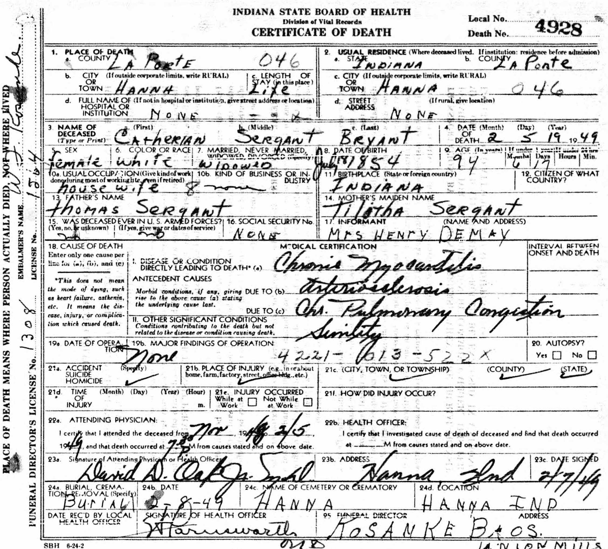
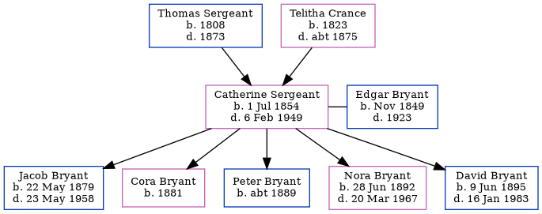

Catherine Bryant (née Sergeant) 1854 - 1949
[ Home ] | [ Calendar ] | [ Surnames Index ] | [ Errors ] | [ Family History ]The 3rd of 8 children of Thomas Sergeant and Telitha Crance, Catherine Sergeant, the second cousin four-times-removed on the mother's side of Nigel Horne, was born in Allen, Indiana, USA on 1 Jul 18541 and married Edgar Bryant (with whom she had 5 children: Jacob, Cora, Peter, Nora Jane and David) in LaPorte, Indiana, USA on 24 Oct 1878.
During her life, she was living in Hannah, Indiana on 1 Jun 18808; and in Hanna, La Porte, Indiana on 1 Jun 19002, on 15 Apr 19106, on 1 Jan 19203, on 1 Apr 19305 and on 1 Apr 19407 which is where she died on 6 Feb 19491. She was buried there at Hanna Cemetery after 6 Feb 19491.
Parents
- Thomas was born in 1808
- Telitha was born in 1823
Children
- Jacob was born on 22 May 1879
- Cora was born in 1881
- Peter was born c. 1889
- Nora Jane was born on 28 Jun 1892
- David was born on 9 Jun 1895
Citations
- U.S., Find A Grave Index, 1600s-Current Ancestry.com Operations, Inc.
- US Census 1920 - Findmypast
- US Census 1920 - Findmypast (was age 63 and the wife of the head of the household)
- US Census 1900 - Findmypast (was the wife of the head of the household)
- US Census 1930 - Findmypast (was age 75 and the head of the household)
- US Census 1910 - Findmypast (was age 54 and the wife of the head of the household)
- US Census 1940 - Findmypast (was age 85 and the mother of the head of the household)
- Us Census 1880 - Findmypast (was age 24 and the wife of the head of the household)
Media
Edgar Bryant - Catherine Sargant - headstone

Catherine Sargent - death certificate

US Census 1940 - USC/1940/1462311261
US Census 1910 - USC/1910/004971221/00384/028
US Census 1930 - USC/1930/004950620/00534/011
US Census 1940 - USC/1940/1462332320
US Census 1930 - USC/1930/004950620/00534/012
1880 US Census Transcription - USC-1880-1000118072464
US Census 1880 - USC/1880/1000118072463
Family Tree
Map
Generated by ged2site. Last updated on Jul 3, 2024
Known Issues
Marriage date (24 Oct 1878) has no citations
Removing leading 0 from residence date '01 Jun 1880'
No records of living with anyone
Adding date of burial as 'aft 6 Feb 1949'
Census information missing between Census US 1880 and Census US 1900